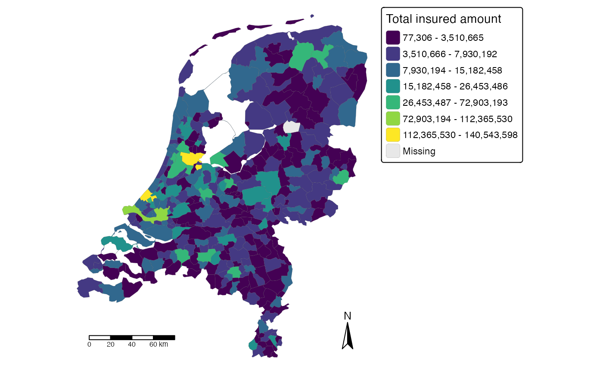

Introduction
This vignette shows how point-level exposure data can be aggregated
to reporting areas and visualised as a choropleth map. Within
spatialrisk, this is primarily a reporting and
communication workflow.
The fixed-radius concentration workflow answers a local risk question: where is the largest accumulation within a circle of a specified physical radius? Polygon-based visualisation answers a reporting question: how is exposure distributed across administrative or management areas?
Both views are useful, but they should not be interpreted as the same measure.
From point exposures to reporting areas
The example uses two data objects included in
spatialrisk:
-
insurance: point-level policy or risk locations with anamountcolumn; -
nl_gemeente: municipal boundaries for the Netherlands.
library(spatialrisk)
library(sf)
point_exposures <- insurance[, c("lon", "lat", "amount")]
head(point_exposures)
#> # A tibble: 6 × 3
#> lon lat amount
#> <dbl> <dbl> <dbl>
#> 1 4.48 52.2 20000
#> 2 5.29 51.6 154965
#> 3 4.50 52.0 146078
#> 4 7.00 53.1 129304
#> 5 4.34 52.1 67636
#> 6 4.83 52.3 29971The amount column represents the exposure measure that
will be aggregated. In an applied insurance setting this could be an
insured amount, total exposure value, risk premium, or another portfolio
quantity.
The reporting polygons define the spatial units used for communication. Municipalities are used here as an example; the appropriate reporting areas depend on the analytical or communication objective.
nl_gemeente[, c("id", "code", "areaname")]
#> Simple feature collection with 352 features and 3 fields
#> Geometry type: MULTIPOLYGON
#> Dimension: XY
#> Bounding box: xmin: 3.358378 ymin: 50.75136 xmax: 7.217623 ymax: 53.55362
#> Geodetic CRS: WGS 84
#> First 10 features:
#> id code areaname geometry
#> 1 1 GM0014 Groningen MULTIPOLYGON (((6.772527 53...
#> 2 2 GM0034 Almere MULTIPOLYGON (((5.350772 52...
#> 3 3 GM0037 Stadskanaal MULTIPOLYGON (((7.015446 53...
#> 4 4 GM0047 Veendam MULTIPOLYGON (((6.961735 53...
#> 5 5 GM0050 Zeewolde MULTIPOLYGON (((5.58907 52....
#> 6 6 GM0059 Achtkarspelen MULTIPOLYGON (((6.232173 53...
#> 7 7 GM0060 Ameland MULTIPOLYGON (((5.731096 53...
#> 8 8 GM0072 Harlingen MULTIPOLYGON (((5.472192 53...
#> 9 9 GM0074 Heerenveen MULTIPOLYGON (((5.92758 53....
#> 10 10 GM0080 Leeuwarden MULTIPOLYGON (((5.838649 53...Aggregate exposure by polygon
The function summarise_points_by_polygon() spatially
assigns point locations to polygon geometries and applies a summary
function. Here, the total insured amount is calculated for each
municipality.
municipality_exposure <- summarise_points_by_polygon(
polygons = nl_gemeente,
points = point_exposures,
value = "amount",
fun = sum,
outside = "ignore"
)
sf::st_drop_geometry(municipality_exposure)[
1:6,
c("areaname", "amount_sum")
]
#> areaname amount_sum
#> 1 Groningen 30218869
#> 2 Almere 30905436
#> 3 Stadskanaal 3080895
#> 4 Veendam 3721274
#> 5 Zeewolde 1887282
#> 6 Achtkarspelen 1313688The result is still an sf object: it retains the
municipal geometries and adds the aggregated exposure column. This
object can be used directly for mapping.
Create a choropleth
The choropleth() function shades polygons according to a
numeric column. The id argument identifies the column used
for polygon labels in interactive maps.
choropleth(
municipality_exposure,
value = "amount_sum",
id = "areaname",
legend_title = "Total insured amount"
)
This map shows how the total point-level exposure is distributed
across municipalities. The function returns a tmap object,
so the map can be further adjusted with tmap if a report
requires additional formatting.
Interpreting the map
A choropleth map represents values attached to predefined polygons. In this example, each municipality is shaded according to the total insured amount of point exposures assigned to that municipality.
This is useful for questions such as:
- which reporting areas contain the most exposure;
- how exposure is distributed across administrative areas;
- which municipalities or regions should be highlighted in a portfolio summary.
It does not directly answer where the highest local accumulation occurs within a fixed physical radius. Polygon-level results depend on the chosen boundaries. Two nearby risks may fall into different municipalities, while exposures spread across a large municipality are aggregated into a single polygon value. Administrative boundaries are therefore reporting choices rather than part of the underlying fixed-radius concentration problem.
Relation to fixed-radius concentration
Polygon-based visualisation and fixed-radius concentration analysis are complementary.
Polygon-based visualisation is useful for:
- reporting;
- portfolio summaries;
- communicating geographic patterns;
- administrative or management views.
Fixed-radius concentration analysis is useful for:
- local accumulation;
- identifying spatial hotspots;
- analysing concentration independently of administrative boundaries.
For physical accumulation questions, use
concentration_hotspot() or the supporting fixed-radius
functions described in
vignette("fixed-radius-concentration", package = "spatialrisk").
For reporting and communication, aggregate point exposures to relevant
polygons and visualise the resulting polygon-level values.
Summary
This vignette demonstrated a complete polygon-based visualisation workflow:
- start from point-level exposure data;
- assign points to reporting polygons;
- aggregate an exposure measure by polygon;
- visualise the polygon-level result with
choropleth(); - interpret the map as a reporting view rather than a fixed-radius concentration measure.